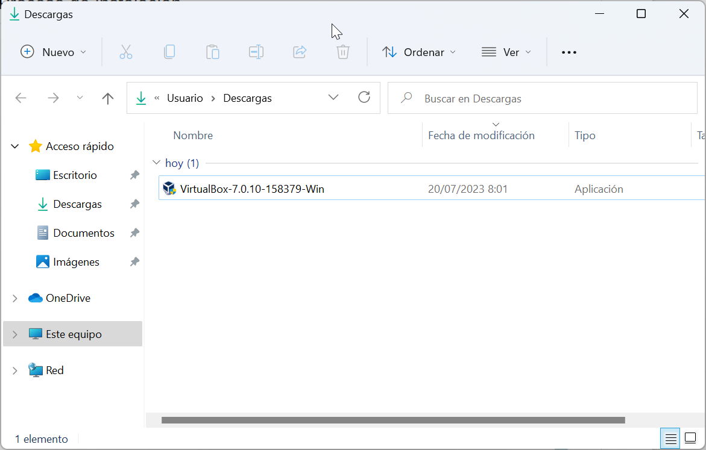
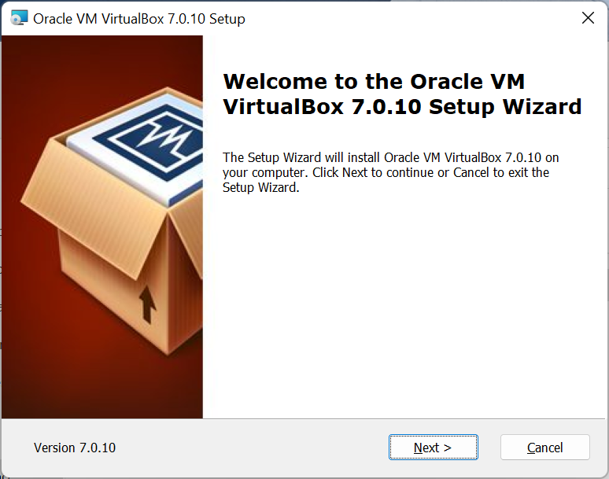
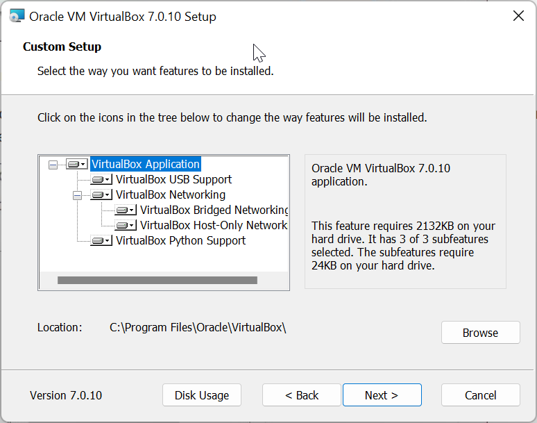
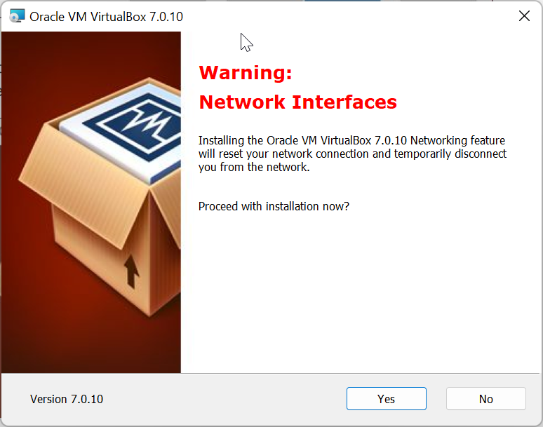
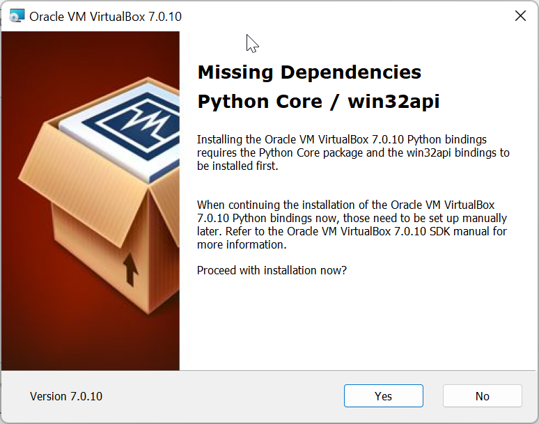
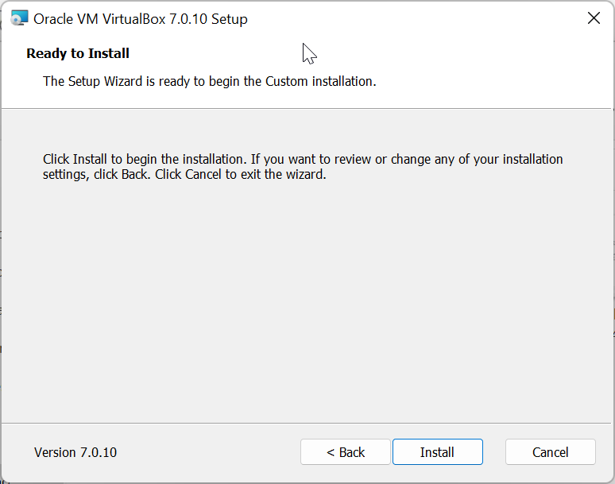
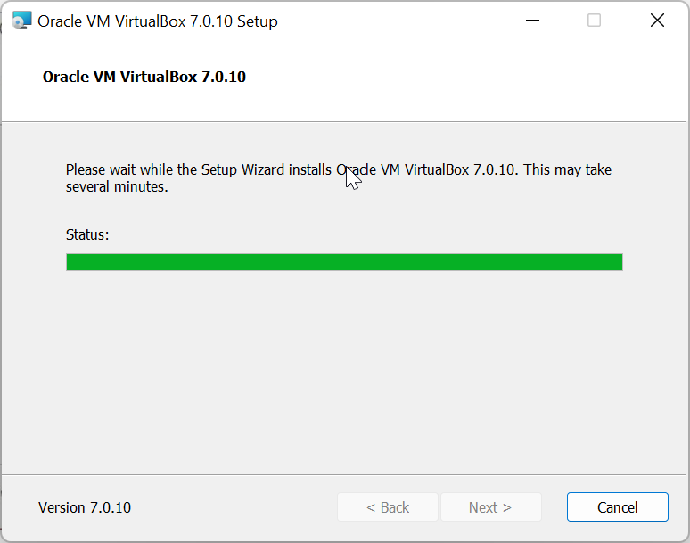
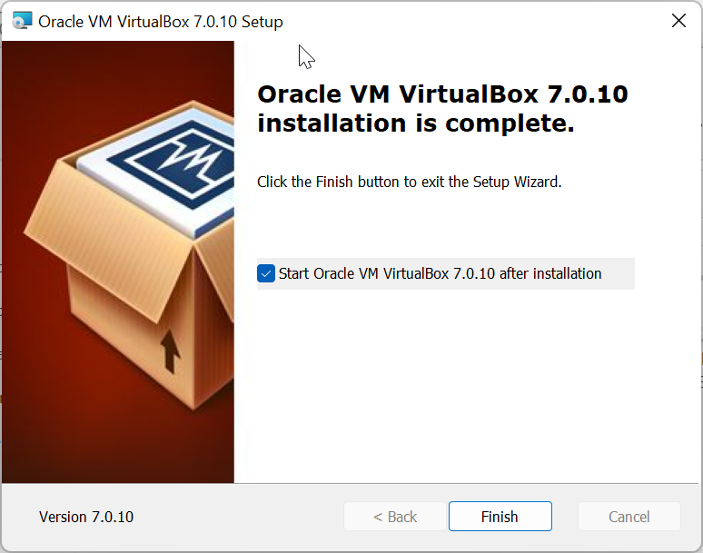
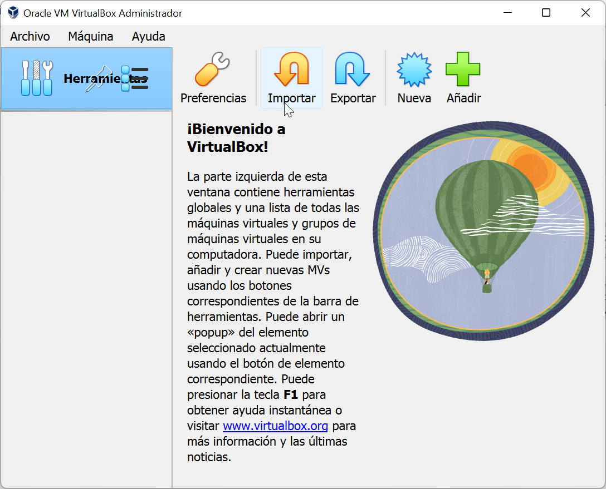

Proceso de instalación
Vamos a ver cómo instalar VirtualBox en Windows. Para ello, buscamos el instalador en el explorador de archivos:

Una vez encontrado, hacemos doble clic sobre él para comenzar el proceso de instalación y se nos abrirá una ventana como la siguiente:

Hacemos clic en el botón "Next".
Como podéis comprobar, se realizará una instalación completa de VirtualBox, incluyendo drivers, a menos que deseleccionemos alguno de los componentes:

Hacemos clic en "Next" para continuar.
Nos informará de que al instalar el módulo "VirtualBox Networking", reseteará la conexión a internet y perderemos temporalmente la conexión de red:

Hacemos clic en el botón "Yes" y nos informará de que se van a instalar unas dependencias, concretamente Python Core y win32api:

Hacemos clic en "Yes" para que las instale ya y nos informará de que se procederá a realizar la instalación al hacer clic en el botón "Install":

Así que hacemos clic en "Install" para comenzar el proceso de instalación:

Cuando termine, simplemente nos informará de que el proceso se ha completado:

Hacemos clic en el botón "Finish" y tendremos la posibilidad de iniciar directamente VirtualBox:
Si no queréis iniciar inmediatamente VirtualBox tras la instalación, desmarcad la casilla "Start Oracle VM VirtualBox 7.0.10 after installation".
Si abrís VirtualBox, veréis directamente la ventana de inicio de la aplcación:
